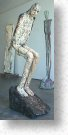
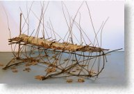
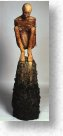

|
William Catling - Shared Suffering at the Diane
Nelson Fine Arts, Laguna Beach, CA
By Roberta Carasso
 ew
artists delve into the wrenching subject of suffering. Why look
at pain when joy is so much more appealing? Ceramic sculptor William
Catling, however, courageously deals with this difficult and sobering
subject, for the purpose of healing-to reveal the transcended effects
of suffering and affirm the gift of life. ew
artists delve into the wrenching subject of suffering. Why look
at pain when joy is so much more appealing? Ceramic sculptor William
Catling, however, courageously deals with this difficult and sobering
subject, for the purpose of healing-to reveal the transcended effects
of suffering and affirm the gift of life.
Clay
is Catling's primary medium. The natural material fuels a dialogue
where sculptor's thoughts become mirrored in clay's malleability.
As the artist's fingers become one with the clay, as he bends, pierces,
and shapes the vulnerable material, an aspect of human angst takes
hold and a figure emerges.
It all began with a recurring nightmare. Catling would envision
an emaciated, powerless woman who was bound, unable to move. Working
intuitively, but following the train the dream as leading him to,
Catling moved in a new direction. The artist built a female figure
and wrapped her in barbed wire, the first work in the series of
human vulnerability. What followed was no fantasy. A French collector
bought the piece for the Museum of Unknown Jewish Martyrs (the Holocaust
Museum) in Paris. It was the beginning of Catling's search to plumb
the depths of human agony to reveal how, when faced with the inevitability
of suffering in whatever form, rather than wallow in pity, consciousness
is capable of rising to a higher level.
Fourteen haunting sculptures give the exhibition a solemnity and
holiness. One enters in hushed tones as if a religious experience
is about to begin. Each figure-engulfed in autumn leaves or twigs,
hanging from chains suspended from the ceiling, reclining limply
on a bench, girdled in branches, or pinned to the wall-exudes an
individual sense of resignation and repose. The naked, almost androgynous
figures become spiritual heroes.
The
San Francisco born Catling is also a poet and finds solace in writing
and reading about the human condition. He continually seeks out
stories and poems by holocaust victims throughout the ages. The
titles of his sculptures are taken from poems written by Holocaust
victims of this century.
"Shared Suffering" points to the nature of compassion
that arises when one human being enters the soul of another to fathom
its pain either empathetically or from having a similar experience.
"Shared suffering" says Caitling, "unites and bonds one to another,
obliterating such differences as age, race, nationality, and creed."
In this exhibition the sharing takes place between viewer and art;
more subtly, between sculpture and sculpture as viewer and artwork,
both become witnesses to suffering and are affected by the depth
of emotion that fills the gallery.
"Fading into Sighs, Silences, Sufferings" is of a man
attached high on the gallery wall. His glorious wingspan might otherwise
symbolize soaring; but his wretched body reveals that he is in descent.
Earth tone, mud-like natural surfaces gives this figure and all
the figures an ageless look, as if they were modeled years before
and excavated still wearing the effects of earth in which they were
buried. Catling achieves this timeless quality through a simple
color palette of black, rust, and ochre, with low fire clay, and
glazed stains that complete the work with a hot and cold finish.
Catling
incorporates natural materials, such as fibers, branches, twigs,
and pieces of log, along with the kiln-fired clay, to show how nature
and life are so inextricably linked. His earlier figures did not
have hands. Rather, he would cut plum tree branches from his garden
and arranged them as hands, or as a leg stump, or emerging from
the body as wings. Soon, clay limbs began to sprout, along with
the addition of thick foliage. In "The Pale God of My Desire," the
sculptor burrows the figure in a cage of branches and a large bird's
nest. By obscuring the figure, Catling suggests the privacy of suffering
and the need to go inward when one suffers.
"In the Open Wound the Heart Surrenders," perhaps one
of Catling's most moving forms, a woman squats in labor upon a mound
of faces. Her head is bent, her mouth open wide, as if she sustains
a long and silent shriek. Her upper body is bound in rust-colored
twine. The restraint suggests that her sole focus at the moment,
is the pain of childbirth and the joy of what that suffering will
bring.
Catling, who is a professor at Azusa Pacific College, tells how,
when he was installing the exhibition, he first placed the work
where he saw fit. Because the forms were created at different times,
many had never been in the same room at the same time. Stepping
back, Catling marveled at seeing all the work in one place. Immediately,
he realized that a dialogue began between the figures, as if new
and old friends were becoming acquainted and reacquainted. Catling
sensed that the sculptures were telling him where they wanted to
be placed. As he listened to their requests, figures were shifted
and rearranged in different locations. The sculptor observes that
the final exhibition took on a far superior look than he originally
had planned and "Shared Suffering" was realized.
Many thanks to Roberta Carasso for the use of
this article. Images used by kind permission
of the artist and Diane Nelson Fine Arts Gallery.
More Articles
|